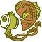

Element Float

float: none
根據 CSS 的排版模型，在正常版型(normal flow)中，文字元素是由上而下，由左而右排列。
float 屬性值 left 讓元素浮動在左邊，right 讓元素浮動在右邊，none 則是讓元素照原來位置排列不浮動。
開始元素先 float: left，後面才接文字
根據 CSS 的排版模型，在正常版型(normal flow)中，文字元素是由上而下，由左而右排列。
float 屬性值 left 讓元素浮動在左邊，right 讓元素浮動在右邊，none 則是讓元素照原來位置排列不浮動。
開始元素先 float: right，後面才接文字
根據 CSS 的排版模型，在正常版型(normal flow)中，文字元素是由上而下，由左而右排列。
float 屬性值 left 讓元素浮動在左邊，right 讓元素浮動在右邊，none 則是讓元素照原來位置排列不浮動。
(元件 float: left 前文字)
(元件 float: left 後文字)，根據 CSS 的排版模型，在正常版型(normal flow)中，文字元素是由上而下，由左而右排列。
float 屬性值 left 讓元素浮動在左邊，right 讓元素浮動在右邊，none 則是讓元素照原來位置排列不浮動。
(元件 float: right 前文字)
(元件 float: right 後文字)，根據 CSS 的排版模型，在正常版型(normal flow)中，文字元素是由上而下，由左而右排列。
float 屬性值 left 讓元素浮動在左邊，right 讓元素浮動在右邊，none 則是讓元素照原來位置排列不浮動。
先顯示文字，結尾元件才 float: left
根據 CSS 的排版模型，在正常版型(normal flow)中，文字元素是由上而下，由左而右排列。
float 屬性值 left 讓元素浮動在左邊，right 讓元素浮動在右邊，none 則是讓元素照原來位置排列不浮動。
先顯示文字，結尾元件才 float: right
根據 CSS 的排版模型，在正常版型(normal flow)中，文字元素是由上而下，由左而右排列。
float 屬性值 left 讓元素浮動在左邊，right 讓元素浮動在右邊，none 則是讓元素照原來位置排列不浮動。
float left + right
根據CSS的排版模型，
在正常版型(normal flow)中，文字元素是由上而下，由左而右排列。float 屬性值 left 讓元素浮動在左邊，right 讓元素浮動在右邊，none 則是讓元
多個 float element
根據 CSS 的排版模型，在正常版型(normal flow)中，文字元素是由上而下，由左而右排列。
如果地區語言是由右而左閱讀，例如阿拉伯文與希伯來文，文字元素就是由右而左排列。
在正常版型中區塊元素是上下排列的，左右空間則是整個被區塊元素佔住。行內元素只是填入所需要的空間。根據CSS的排版模型，在正常版型(normal flow)中，文字元素是由上而下，由左而右排列。如果地區語言是由右而左閱讀，例如阿拉伯文與希伯來文，文字元素就是由右而左排列。在正常版型中區塊元素是上下排列的，左右空間則是整個被區塊元素佔住。行內元素只是填入所需要的空間。
段落首字
落地生根為景天科多年生,可長成亞灌木狀，葉肥厚，葉片邊緣鋸齒處可萌發兩枚對生的小葉，在潮濕的空氣中，小葉能長出纖細的氣生鬍根，這些小葉均勻排列在大葉片的邊緣，一觸即落，落地生根。此引植物原產南非馬達加斯加島，生長於山坡上或溪邊灌木叢中，喜陽光充足溫暖濕潤的環境，較耐旱，甚耐寒，適宜生長於排水良好的酸性土壤中。
落地生根除能用葉上的不定芽“播種”外，還可以用葉扦插，做法是將葉平鋪在基質上，土壤不要太潮，待其生根後切開，或將葉切成段，切口陰幹後扦入基質。
這種植物適應性強，栽培管理粗放。盆栽時可用腐葉土3份和砂土1份混合作基質。對新上盆的小苗要及時摘心，促進分枝；對於較老的植株，其莖半木質化、脫腳且多彎曲不挺立，觀賞價值降低，應予以短截，使其萌發新枝。平時澆水要待乾透再澆，不必擔心會乾死，施肥不必過勤，否則造成旺長，並有可能造成植株腐爛，生長季每月施肥1-2次即可。盛夏要稍遮蔭，其它季節都應有充足的光照，否則葉緣的色彩將消失。秋涼後要減少澆水，冬季入室後室溫只要保持0℃以上就能越冬。但盆土要稍微保持濕潤。
落地生根為景天科多年生,可長成亞灌木狀，葉肥厚，葉片邊緣鋸齒處可萌發兩枚對生的小葉，在潮濕的空氣中，小葉能長出纖細的氣生鬍根，這些小葉均勻排列在大葉片的邊緣，一觸即落，落地生根。此引植物原產南非馬達加斯加島，生長於山坡上或溪邊灌木叢中，喜陽光充足溫暖濕潤的環境，較耐旱，甚耐寒，適宜生長於排水良好的酸性土壤中。
落地生根除能用葉上的不定芽“播種”外，還可以用葉扦插，做法是將葉平鋪在基質上，土壤不要太潮，待其生根後切開，或將葉切成段，切口陰幹後扦入基質。
這種植物適應性強，栽培管理粗放。盆栽時可用腐葉土3份和砂土1份混合作基質。對新上盆的小苗要及時摘心，促進分枝；對於較老的植株，其莖半木質化、脫腳且多彎曲不挺立，觀賞價值降低，應予以短截，使其萌發新枝。平時澆水要待乾透再澆，不必擔心會乾死，施肥不必過勤，否則造成旺長，並有可能造成植株腐爛，生長季每月施肥1-2次即可。盛夏要稍遮蔭，其它季節都應有充足的光照，否則葉緣的色彩將消失。秋涼後要減少澆水，冬季入室後室溫只要保持0℃以上就能越冬。但盆土要稍微保持濕潤。